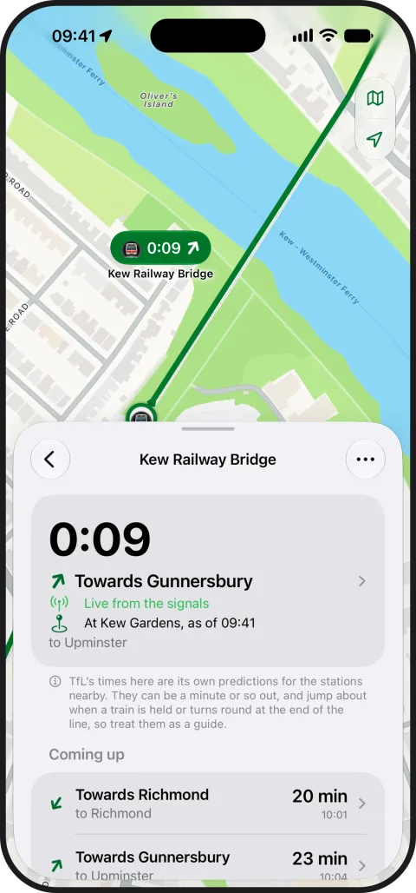
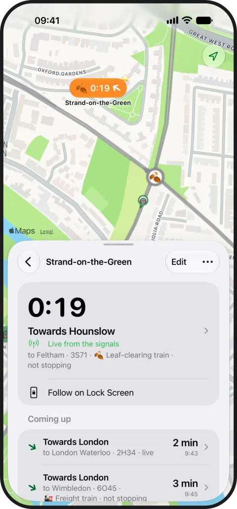
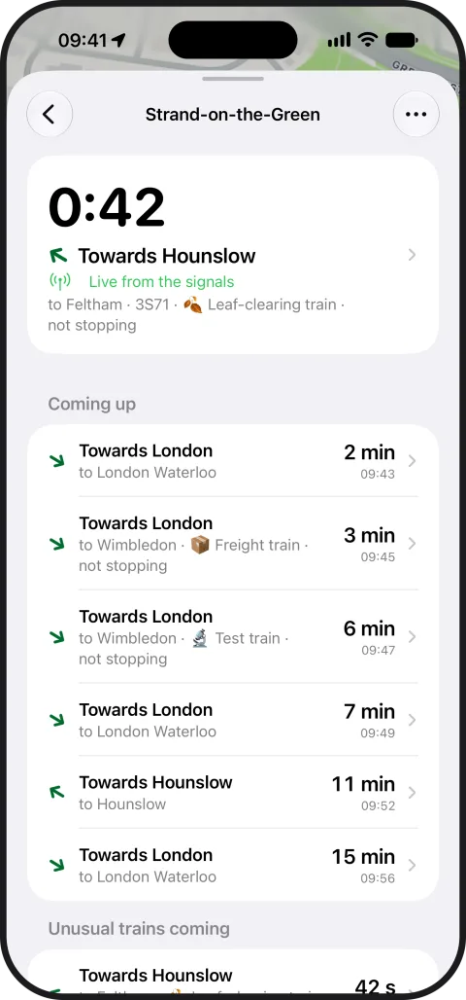
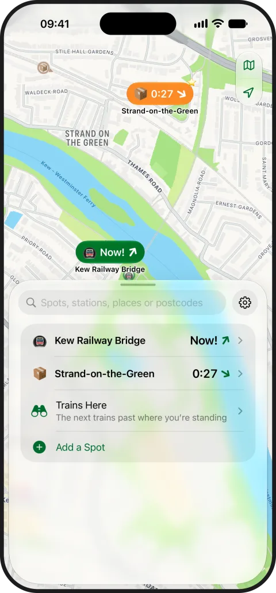
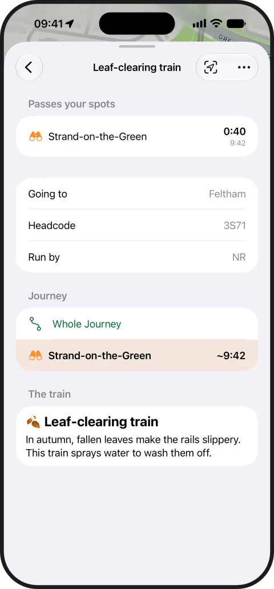
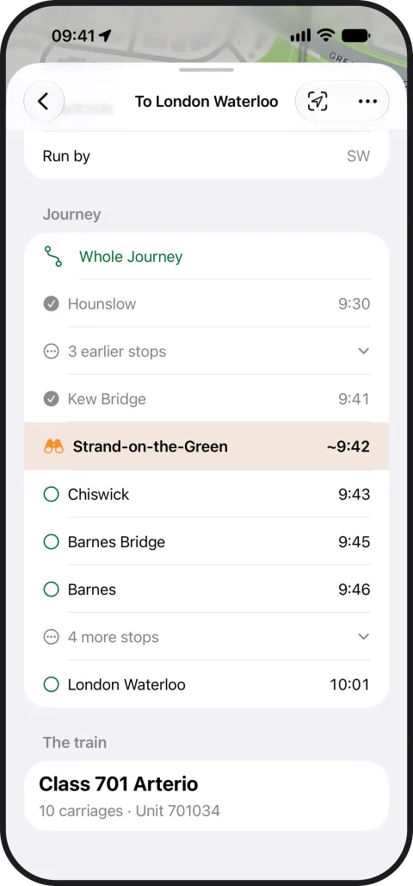
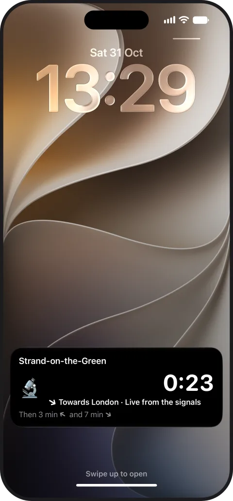
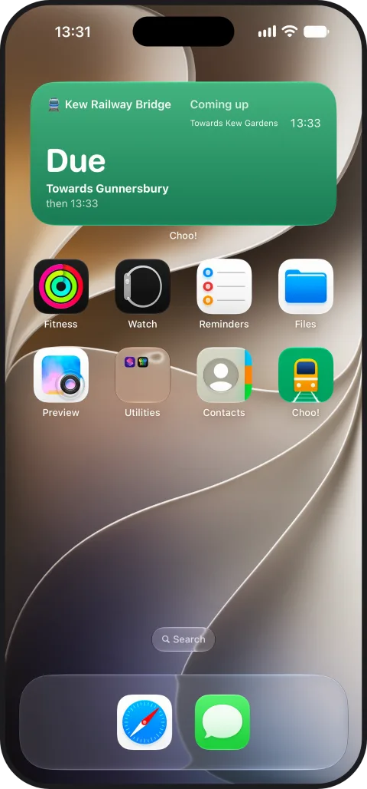
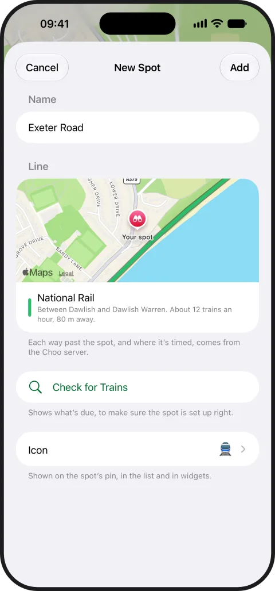
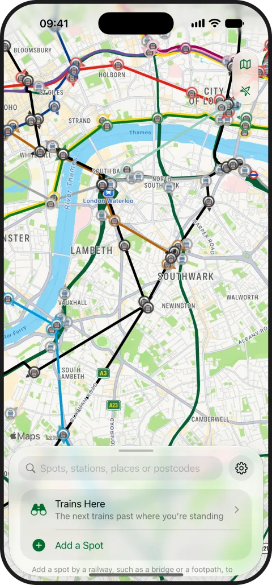

Writing about Choo?
You’re welcome to use anything here in your coverage. If there’s something missing, get in touch.
Press contact
The story
Choo was made by a parent in London for a toddler who loves trains, so they’d never miss one going by. It counts down to the next train past wherever you’re watching from: a bridge, a footpath beside the line, the end of a platform. It works out when each train will pass that spot, not when it leaves a station, so it includes the ones that don’t stop, and in the last few minutes National Rail trains are timed from the railway’s own signalling. It points out the unusual trains, like freight, test, charter and leaf-clearing trains, with simple explanations of what they are. It covers National Rail across Great Britain and TfL’s lines in London, and it’s for families with a little train fan, and for anyone who still waves at trains.
Fact sheet
| Name | Choo! Live Train Tracker (“Choo!” on the Home Screen) |
|---|---|
| What it does | A countdown to the next train past the place you’re watching from, with unusual trains flagged |
| Devices | iPhone and iPad, iOS 18 or later |
| Features | Countdown on the Lock Screen and in the Dynamic Island, Home Screen and Lock Screen widgets, and notifications for unusual trains |
| Where | Great Britain: National Rail trains across England, Scotland and Wales (including freight and trains that don’t stop), and the Tube, DLR, Overground and Elizabeth line in London |
| Release | 30 November 2026, on the App Store; pre-order now |
| Privacy | No ads, no accounts, no tracking (privacy policy) |
| Data | National Rail Enquiries (Darwin), Network Rail open data, TfL Open Data and OpenStreetMap (credits) |
| Made by | Andrew Bennet, an independent developer and parent in London |
| Website | choo.express |
Choo is independent, and isn’t affiliated with or endorsed by Transport for London, Network Rail, National Rail or any train company. Times are estimates.
Safety
Choo is about watching trains from public places behind a fence or barrier, never on or near the line. If you’re photographing or filming for a story, please do the same, and keep little ones’ hands held near the railway.
Downloads
Download everything (ZIP, 18 MB)
Icon

Screenshots
Each in an iPhone frame on a transparent background, with no captions: PNG, 1358 × 2906, with the screen at the iPhone 17 Pro Max’s full 1320 × 2868. Tap one for the full size.

The countdown at Kew Railway Bridge: a District line train 8 seconds away, live from the signals
A leaf-clearing train flagged at Strand-on-the-Green, its pin starred on the map
Coming up: a freight train and a test train among the next trains past a spot
The map: each spot’s pin counts down to its next train
A plain-English explainer for a leaf-clearing train
A train’s page: where it’s going, its journey and its carriages
The countdown on the Lock Screen while you walk to the bridge
The Home Screen widget
Adding a spot by the sea wall at Dawlish
Exploring the map over central London: Tube and rail lines, with the trains on them


Clips
Short screen recordings of the app, as on the home page.
- The Ouse Valley Viaduct: a train counts down to “Now!” as it crosses, then the wait for the next one (MP4)
- Strand-on-the-Green: a spot’s countdown with the train coming along the map (MP4)
- A train’s page: where it’s going, its journey and its carriages (MP4)
Get Choo
Want the odd bit of news? Leave your email.
We’ll email you to confirm, then with the odd blog post and news. Unsubscribe any time. How we handle your email.